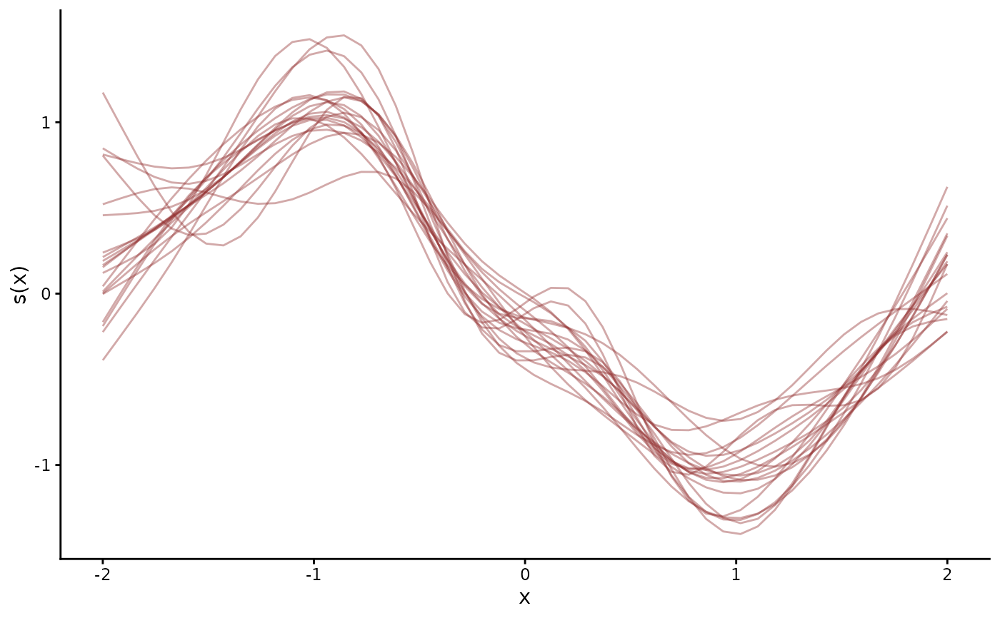

Evaluates one smooth at the rows of newdata for each posterior
draw, in the shape brms::posterior_smooths() returns. The smooth
can be any s() or t2() term of the observation formula, a
distributional or non-linear parameter's formula, or the trend
formula, by factors included.
Usage
# S3 method for class 'mvgam'
posterior_smooths(
object,
smooth,
newdata = NULL,
resp = NULL,
dpar = NULL,
nlpar = NULL,
ndraws = NULL,
draw_ids = NULL,
...
)Arguments
- object
A fitted
mvgamobject.- smooth
The smooth term as the formula writes it, such as
"s(x)","s(z, by = group)"or"t2(x, y)". Spacing is ignored.smooths.mvgam()lists the terms.- newdata
A
data.frameholding the smooth's own variables, orNULLfor the training data.- resp
The response the smooth belongs to, required on a model with several.
- dpar, nlpar
The distributional or non-linear parameter the smooth belongs to. Name at most one. With both
NULLthe smooth belongs to the mean.- ndraws, draw_ids
The number of posterior draws, or their indices. Give at most one.
NULLfor both uses every draw.- ...
Unused. Anything passed here is refused.
Value
A numeric matrix with one row per draw and one column per
row of newdata: the smooth's contribution to the linear
predictor.
Details
The smooth's contribution is its unpenalised basis times its
fixed coefficients plus each penalised basis times its random
coefficients, per draw. The bases come from brms::standata()
evaluated on newdata. The coefficients come from the draws.
brms::posterior_smooths() adds a predictor's offsets to each of
its smooths. This method leaves them out.
A term written in both the observation and the trend formula is taken from the observation formula.
See also
conditional_smooths.mvgam() summarises every smooth.
smooths.mvgam() lists the terms.
Other predictions:
conditional_effects.mvgam(),
conditional_smooths.mvgam(),
fitted.mvgam(),
hindcast.mvgam(),
posterior_epred.mvgam(),
posterior_linpred.mvgam(),
posterior_predict.mvgam(),
predict.mvgam(),
predictive_error.mvgam(),
predictive_interval.mvgam()
Examples
# \dontrun{
set.seed(13)
simdat <- sim_mvgam(family = poisson(), n_series = 1L,
n_timepoints = 120L, trend_model = AR())
mod <- mvgam(y ~ s(x), trend_formula = ~ AR(p = 1),
data = simdat$data_train,
family = poisson(),
chains = 2, silent = 2)
#> Warning: 9 of 2000 (0.0%) transitions ended with a divergence.
#> See https://mc-stan.org/misc/warnings for details.
# Twenty draws of s(x) over a grid of x
grid <- data.frame(x = seq(-2, 2, length.out = 50))
sm <- posterior_smooths(mod, smooth = "s(x)", newdata = grid)
draws <- data.frame(x = rep(grid$x, each = 20),
value = as.vector(sm[1:20, ]),
draw = rep(1:20, times = 50))
library(ggplot2)
ggplot(draws, aes(x, value, group = draw)) +
geom_line(colour = "#8F2727", alpha = 0.4) +
labs(y = "s(x)") +
mvgam_theme()

# Next, conditional_smooths(mod) summarises every smooth in one call
# }